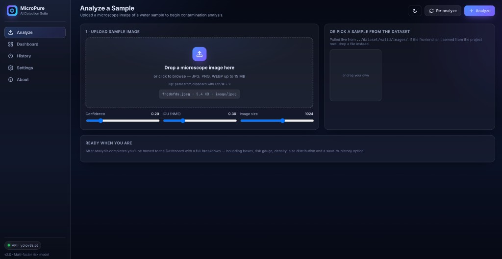
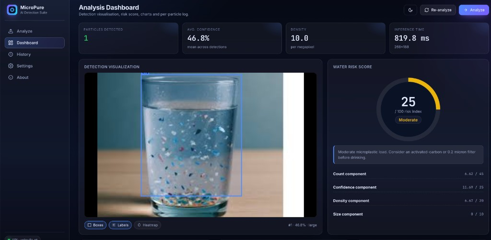
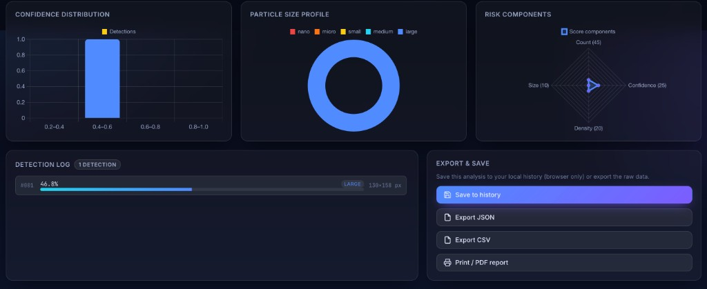
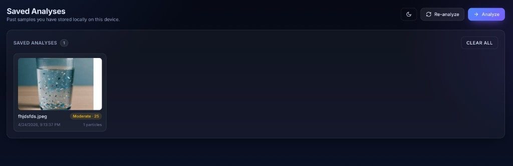
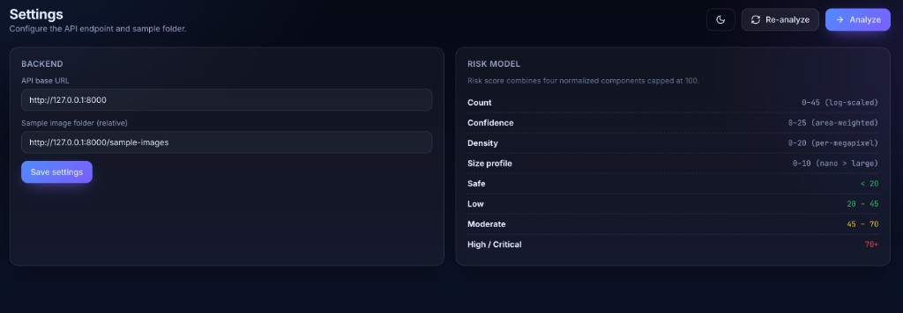
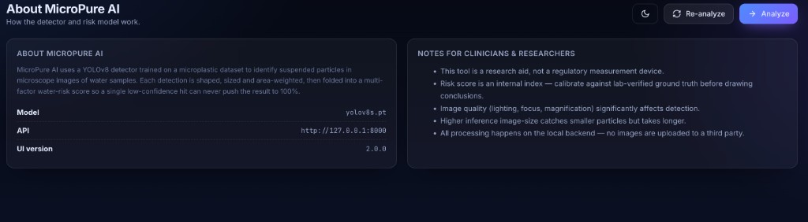

AI-powered microplastic detection that turns any microscope image into a quantified water-safety risk score — in under a second, on your own laptop.
Microplastics are now in our oceans, soil, food, blood, and lungs. They're under 5 mm — invisible to the eye and almost impossible to count without expensive lab equipment. Detection is the bottleneck. You can't fix what you can't measure.
MicroPure AI is a browser-based dashboard backed by a YOLOv8 detector trained on microplastic imagery. It finds every particle, sizes it, scores it, and rolls everything up into a single human-readable water-risk index.
/predict endpoint — drop into any pipeline or LIMS.




Sources: EPA SDWIS, NSF Education Stats, Statista bottled-water QA, IBWA reports. Bars are addressable annual spend on water-quality testing & lab tooling, not committed revenue.
Composite forecast: Grand View Research, Allied Market Research, EPA SDWIS roadmap. ~18% projected CAGR driven by California SB 1422, EU SUP Directive and WHO follow-on guidance.
| FTIR / Raman | Manual microscopy | Cloud AI tools | MicroPure AI | |
|---|---|---|---|---|
| Cost to start | $100k+ lab | Microscope only | Subscription | Free + open source |
| Time per sample | Hours – days | 30–90 min | Seconds (after upload) | < 1 sec, local |
| Skill required | PhD chemist | Trained tech | API integrator | Anyone with a browser |
| Privacy | On-prem | On-prem | Images leave device | 100% local inference |
| Risk interpretation | Raw spectra | Raw counts | Raw counts | 4-factor scored index |
| Built for education | No | Sometimes | No | Yes, by a student |
Quantitative survey + live-demo session with 9th–12th graders to validate awareness, willingness-to-use and perceived value. Plus early qualitative feedback from teachers and a research mentor.
Conservative model: 12% Free → Pro conversion, $9 Pro ARPU, $1,800 Team ARPU, 3 enterprise utilities by Y3 at $20k ACV.
9th Grade · Bellarmine College Preparatory · San Jose, CA

Survey statistics on slide 15 are derived from a primary in-school survey of 100 Bellarmine College Preparatory students (2026); methodology available on request. Market sizing (slides 09–10) is illustrative, blended from Grand View Research, Allied Market Research and EPA SDWIS.
Questions? Pilot interest? Want a demo for your school, lab, utility or beverage QA team?